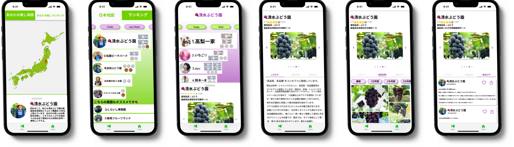

Work
農家推し活体験
OshiOishii(推し美味し)
UI/UX

メンバー
100Programに参加して結成した(4人)
担当
UI/UX deisgn
制作期間
1か月
使用ツール
Figma
UIフロー
制作過程
1.リサーチで「日本の農業には複数の問題が山積みであること」に気づく
私たちの日々の食生活を支えているのは、農作業という重労働をする農家さんです。 しかし、高齢化による後継者不足や生産量減少による自給率の低下など様々な問題が解決されていません。 そこで私たちは、消費者が農家の大変さや食べ物のありがたみを感じる社会を実現したいと考えています。 私たちのプロジェクトでは、特に果物を栽培する農家に焦点を当て、衰退する日本の農業を活性化させることが目的です。
▼
2.コンセプトは「ユーザーが簡単に農家を"応援"できて、おいしい果物を購入できるアプリ」
私たちは農家をより身近に感じられる仕組みが必要だと考えています。なぜなら農家や農作物と消費者の距離を近づけることで農業をより身近に感じられるのではないか
と考えたからです。どのように応援したら農家さんは働くモチベーションが湧くかをチームで話し合い、
「最高級の果物を適正価格で市場に出したい」という農家さんのインサイトに気づきました。
そこで、消費者が栽培段階の途中で農産物を購入できる投資のようなアプリに仕上げました。
これはまるで「農家」を「推している」ようなことから「農家推し活アプリ」と私達は呼んでいます。
▼
3.異なる専門分野の学生と連携しながら開発を進める
私以外のメンバーがすべて情報系ではない専攻の学生でした。そのため、どのようなスケジュールで
どのように進めるかを考えながら作成を進めていました。
また全員で集まった際は使用ツールを教えたり、欲しい機能や
理想のUI designを話し合ったりしました。Figmaを用いてアイデアを形にし、Version2としてのプロトタイプを制作しました。
▼
4.今後は、果物農家の方に評価してもらい、機能の改善を続ける
作成したデザインを元にスマホアプリとして実装し、 農家さんへの現地ヒアリングやインタビューを行いたいと考えています。 また身の回りの家族や友人などにも質問紙調査やインタビューを行い、農家を推したくなるワクワクする体験かを 質問して評価したいと考えています。